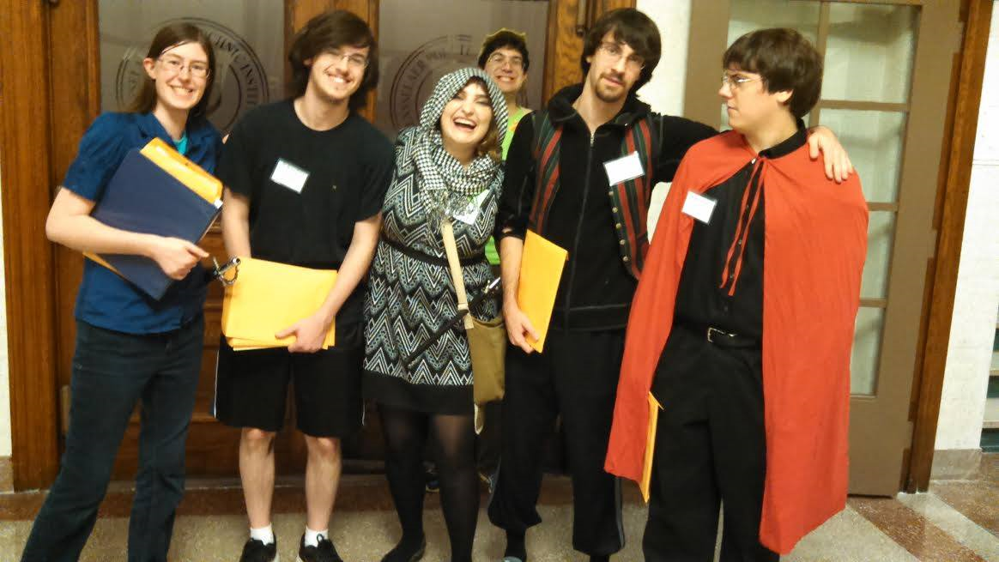
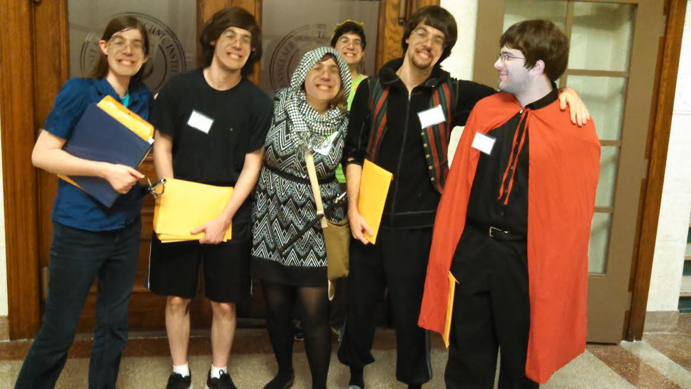
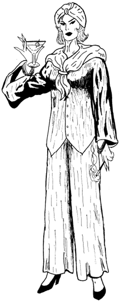

Kathryn DiPippo Larping Resume
Below is a list of all the LARPs I've participated in. Click the dropdowns for a more indepth write up of my experiences. Warning: don't click to avoid spoilers
Categories -> 2-4 Hour Day Long Weekend Long Writer ??? ???


Played as Sarah Elizabeth Briggs, the wife of the captain of the ship and also the heiress to the title High Priestess of Atlantis. Notable moments include this being one of the first moments meeting Nick and Darien in person, including locking Darien in a room to fend for herself for 45 minutes to prevent her from wreaking havoc. It is also notable for when Simon made a joke about Mecha Hitler existing, and at game wrap revealed for the first time how he was a Nazi from the past.
I played as Catherine Thomas, a name that was a very interesting coincidence on my part. At this point I liked hanging out with Darien and Nick (I can’t recall if I was rooming with them by now). My backstory was that to others I was a random kid from the orphanage. In reality, I was a Nazi from back in the day! I loved chaos and wreaking havoc! And then when the Nazis finally took over, there was much more control than chaos. So I transformed into a teenage girl with teenage girl tendencies, and here I was today. My main goal was just to cause chaos, and I failed miserably. I pretended to have a crush on Nick’s character, Timmy; I then attempted to kill him….and failed. I tried to kill him again….and failed. He fled into his mom’s laboratory, and everyone prevented me from seeing him. “Timmy’s sick now”. “Timmy’s stuck in a well”. “Timmy jumped/fell out the window”. “Timmy’s dead”. Finally, his mom played by Darien emerged from the safety of the lab. I had stolen Andrew Dunetz’s gun after accidentally telling him I was a Nazi when he assumed I was a commie. I took aim at Darien and fired; missed. She fled to the lab once again. Given that I tried to kill her in plain sight in front of a government lab, a group of 6 people came after me and lynched me on the spot. My badge still has 3 green stars and 5 gold stars for total damage taken. Good job, me. And since then I have explicitly mentioned to not put me in positions where I have to lie for the time being.
I played as Joanna Angel, and in my defense I had no idea what I was getting into when I signed up. I didn’t know Joe at the time, I barely knew the LARPing community either, so why not participate in probably one of the most uncomfortable LARPs to do as a first one? But it was fantastic. Joe wrote the character of Snatch Boogie to be played by Izzy, and I got to see the run where Izzy played as Boogie. I costumed the role of a vampire stripper by wearing the tight sequined skirt, a bra over my shirt over another bra, a brightly colored blue wig with glitter glue on my face, and fuzzy pipe cleaner face piercings. Also apparently Izzy called me “Fucknugget” the entire game too. Oh also, Jonah the Falcon played by Seamus the Moose had a penis with superpowers. And I will forever remember trying to nickname it Vlad the Impaler to help him gain super strength. Wow, Joe also wrote a list of 102 movies with porn name alternatives. But the best part by far was Izzy making pornos featuring most of the cast while trying to satisfy all of the popular fetishes of the world. It all ended with being on a pirate ship while a kraken with multiple penises on its tentacles tried to take over….and when he finished, a psychology professor outside of the room started clapping.
I played as M-2483, also known as the android “Ni”. I had two siblings, “Ichi” and “San” played by one of Sean McCormack’s sisters and Craig respectively. This was my third game of the day, as you can see by the date, and at this point I was really tired. And that reflected on my character; I turned into a super bubbly, hyper, off-putting stalker more or less. Devin’s character was the son of a CEO, and I wanted him dead because Dylan’s character wanted his position. I also had a love triangle plotline where I was in love with Adina’s character…..but the other member was Cameron. And at the time of writing this, I know that Adina and Cameron are an item in real life as well as back then, so it was a lost cause. But before killing Cameron, I wanted to kill Devin. So I took a sticker (as poison is represented by putting a sticker on someone) and tried getting it on his hat. He noticed and caught me, causing the sticker to drop on the ground sticky side up. I stepped on it. Thereby poisoning myself. In the end, I was killed by a ricocheted bullet and got to make a dramatic speech at the end. Only three people died in total in this run, given that in normal runs of this game over 80% of the original casts end up dead. There ended up being a ton of finger pointing but no one wanted to make the first shot.
I played as Henrietta Maria, Contessa de Ridolfi, the Ambassador of Albernia. Albernia in this setting was (after a certain point) referred to as Not-Spain, alongside Duncruigh the Not-England and Nantierre the Not-France. This game was one of my highlights of my LARPing experience starting out. I had a moderate amount of power while controlling an unstoppable navy. I worked with Andrew Dunetz, a warrior in Not-England, and Loud Seamus the ambassador of Not-France to overthrow the current king of Not-England. By the end of Saturday, everything hit the fan when the king was trapped in his own tower by us while he was struggling with having to sacrifice one of his daughters to quell the fairy invasion. The LARPers in the trapped castle were reportedly very emotional as a result, crying in character with everything falling apart. That shook me up after game wrap on Sunday, admittedly. And while my goals were never actually fulfilled, I was deported back to Albernia a hero; I had helped create chaos in Not-England and help them to become a weaker world power. Oh, and I also got 5 counts of slander for attempting to fight someone, the highest of anyone in game.
I played as Angel, a really, really, really old superhero. Every time I died, I was reborn as something new. And due to my changing genders and plenty of love interests, almost all of the modern day superheroes were actually my children. Given my real name was Joan Darque, that’s an indication for how old I was. My main goals were to find the normal villain scum knowing that they were going to show up at the event. Oh yeah, also one of the villains, a reporter named Digger Upton, ended up resulting in the death of my prior life as Phaser. In the end, Kyle’s character wanted me to go up to space with him and join the space legions and protect space. Looking back, this was probably the first time I requested a role involving Kyle’s character. Oh! The best part at the end! So Angel was actually killed because I committed a murder suicide with Digger Upton. I killed him and then shot myself to be free of the charges. GMs actually reincarnated me with a random super power – the power of Santa Claus! Turns out, this is one of Joker’s special abilities and I inherited it as my sole power without a time limit. I became known as The Sleigher and spawned toys for everyone for the last hour and a half of game.
I played as Nasira Jasim, a secret apprentice for a great sorcerer Malik El-Hashem. But he’s dead now, so it was my duty to be able to achieve ultimate arcane power in his place. In the end, it actually turned out that Alex Gordon, played by Izzy, contained the sealed powers of Malik. Another plot twist at the end showed that Alex Gordon believed he had a daughter. He was actually thinking of Malik’s daughter, who was me. This was only realized at game wrap.
I played as Will Carver, the James of Team Rocket equivalent. Darien played as Della Rose, the Jesse of Team Rocket equivalent. It was absolutely amazing. We didn’t have too much plot to do besides be Team Free Bird (bikaw bikaw!) in disguise. I was in disguise as the female Reilly D. Maun while Darien was in disguise as the male Natt A. Gie. I had so much fun being a guy pretending to be a girl with our invisible guns and just being overall ridiculous to no end. There were also conflicting plots with she and I where I wanted to turn into a good guy and she wanted to stay evil, so we decided to go down the Robin Hood route of doing bad-guy deeds with good-guy motives. But seriously, this all takes a backseat to the Team Free Bird (bikaw bikaw) montra and how the two of us emerged from our disguises and used Free Bird Fly Away. I also just remembered my disguise as a woman used my two alpacas to make my chest look overtly big.

I played as Parsli the Sage, an up and coming Emir fangirl. But actually, I was Ylada Mudd, the original Earth Emir who was presumed dead! Highlights for this LARP was that I specifically requested being cast with a role involving Kyle, as I had a crush on him at the time. As a result, I was cast in a role where I was forced to choose between Kyle (who was Huriah Khan, the Air Emir) and Darien (Henry Houdini, one of the lead chairmen of the empire and also a secret member of the Dawn). In the end, I went with Kyle after the GMs said that the decision between them was fully up to me as a playing character. We survived, a lot of people died from solving a chess password puzzle, and Darien technically became the leader of the empire…..until the Emirs would inevitably overthrow her. Oh, I also took a selfie with the Emirs, which was great!  
I played as Leslie, a nondescript normal looking person who ended up at this bar among a bunch of other crazy people. This was an interesting cast as I was the only person who knew what was going on the whole time – even more than the actual GM sheet too. I arrive to the bar not knowing much, but with tons of contingency envelopes, it’s revealed that the setting is very similar to Game of Empire’s plot twist. The current bar and grill is not actually what it seems. It is actually a psych ward where crazy people have been inducted. Everyone else at the setting is one of these crazy people, and I was planted there to keep surveillance. It played out interestingly, although I more or less just watched what went on from the side. But hey, Kyle barked like a dog at Joe so that’s something.
I played as Donna, a “Jewish woman whose artistic abilities seem to be having unusual changes”. I couldn’t believe that Joe actually wrote this as a character. My skills as an artist meant that if I drew a picture of someone, their true personality showed through. So I could figure out if someone was an angel or a devil figure based on what appeared. I also collaborated partially with Darien and Nick’s characters by providing them with my portraits. About halfway through game after drawing pictures, most of my plotline was fulfilled, and the rest of the time was spent goofing around with Darien and her talking horse head that went “WAN”. For two weeks after that, I could not keep a straight with anyone while imitating that noise.
I played as Dorotea Schreckenghast, a fake television psychic who utilized her number one fan to help her be convincing. My fan, Faith Serville played by Darien, was always great and loyal to me; she even killed my enemies for me without me instructing her. For example, there was one reporter Bruce Kent who was going to reveal my deceit, and Faith faithfully took care of that. Darien wanted to show me her picture on her character sheet, but she was shown with a knife, a huge spoiler. The game was super fun! I got my own office, which Darien and I hung out in for a good amount of time. I got involved with a drug ring with Sean McCormick. Kyle got involved too, but it turns out that he was just trying to find out who Snow White the drug dealer was (hint: it was me). But just as he tried to reveal who I was, the detective instead accused me of smuggling powdered sugar (not crack) along with Darien and also being associated as notorious pastry chefs. It was a great moment where any drop of power Kyle might have had over me was immediately looked over in favor of comedy. Also I used the Tallan glowing cube with Yugioh cards, Tarot cards, and Mario Hanafuda tiles to perform “rituals with people”…..which also mostly consisted of fucking with them. 
I played as Beth Andrews with the hint of “don’t let Kyle get jealous of your fancy new zombie boyfriend”. This was a short 2 hour game written and GMed by Corwin, and it was great. My character had a boyfriend named Tommy, the love of my life. And then someone killed him, but I got his head! Also, Corwin gave me the prop of Tommy’s head as a stuffed Pikachu; I now forever refer to that Pikachu as my dead boyfriend. I found out the killer was this creepy guy, who I thought had a crush on me, after I stole a bloody knife from him. What was great is that he tried to frame me for the killer by asking around to check for a bloody knife on anyone. Smooth move, player character. In the end, we found someone who had an infinite amount of blood due to being immortal, and combined with a demon witch sorcerer who caused the zombie apocalypse in the beginning, we summoned Cthulhu! We defeated him, somehow. But one of the evil characters became the most powerful being in existence.
I played as the fabulous Mai Valentine. Got a full attire all set (I’m hoping someone got photos of it so I can post here). So other than the regular characteristics of Mai from the Abridged Series, with lots of statements like “my breasts would like to talk to you” and such, I was an undercover cop looking for drug dealers among people on the island. I was terrible at my job though, as at one point I started asking people about if they did drugs or not. They said no, and at game wrap I found out they were all doing drugs. Especially Joey, who was played by Nick. Darien played as Duke Devlin, which was great. I made sex jokes like helping her roll her dice, and every single one slowly killed her. It didn’t help that her background music played constantly and drove her slowly insane too. Kyle was Pegasus, and he was almost born for that role. A lot of the plot involved his backstory…even though he himself didn’t participate in much plot in game. I got to strip for a lot of people, trying to convince them to side with me by removing my purple coat. I got Rob to laugh, which was rewarding. Oh, and I also cured Tristan’s voice with my boobs, as my boobs were the only entity in game that could actually heal people. The guy with the pointy hair rescued me from a falling building by groping me and flying me off with him. And in the end I had the Millenium Ring that was slowly tearing me apart without me realizing. The game’s rules briefing went over playing card games though, and Izzy told me each character had their own personalized deck. But alas, there was never actually any dueling that went on. And half of the stats for characters were made up too. It was great.
I was cast as Drone Zel, a very alien-looking creature. I worked as one of the henchmen for Overlord Xor, who was very fair for a super villain boss. I was in love with a guy named #43, played by Dylan, and I wanted to make sweet alien babies with him to please his father #7 and prove that we could procreate. The start of the game began with us sending text messages, like “Hey bby wan sum fuk? This is something I learned that humans in love say to each other” followed by heart, eggplant, and teardrop emojis. Out of character, Dylan was actually planning to send me a message of similar quality. So I walked around game talking to people for 2 min and shaking their hand so that I could both read their mind as well as get a genetic sample from them. I had to wait for Jess to show into game because her character’s genetic makeup was essential to me finishing my plan. Once I completed the process and made a fake embryo, I wanted to surprise #43 with it….and thus the rumors of space rape circulated around the room. In the end, #43 and I broke up, and the only person who I found would be okay with me planting an alien baby in them was the female leader of the conference who was old and went through menopause already….and who was also engaged to #7. I wanted to plant it in Corwin, who was like a 1000 minions from Despicable Me in one person, but he was deemed unstable. I also wanted to plant it in Mark, who played Earthling Prime, the lead human henchman of Overlord Xor, but he also said no. So the impregnation went off smoothly, like a tentacle going into a belly button.
I was cast as Briony Travis, a girl who never figured out social norms. When I was reading my character sheet – the first four pages of which covered how out-of-place this character felt with both forming friendships and dating – the more she reminded me of Tina from Bob’s Burgers. After deciding this and then reading the rest of the character sheet, I knew that the personalities were a perfect fit. Briony had been taken to a bunch of forest hippies as a scare from one of her boyfriends, but it turned out that the hippies were worshippers of Shub-Niggurath, an outer god whose beliefs focus on reverting the world back to its more feral roots. Briony, who was dubbed by Shub-Niggurath to be her priestess, turns into a being of “raw sex, terror, and majesty” when she evokes Shub-Niggurath. Her main goals were to get more people to follow Shub and be able to summon her at the end of the game. At the end of the game, my group came in third place to Yog-Sothoth and Hastur (but beat out Darien’s Cthulu cult). The most awkward moment in game was dating Hal’s character just because….that character happened to be played by Hal. I broke up with him by lying to him that I was a lesbian (Briony was definitely bi due to her relationships with Aniko’s character Jill and Nick’s character Jacob). The most fun I had throughout game was when I tried to be more like Tina and follow her traits – like running up to a group of people after they were debating how to split points in “three way[s]”. There was another moment when Nick’s character Jacob and Darien’s character Grey were sitting together as a couple eating lunch and discussing tihngs in private, and I wanted to third wheel their conversation. I took that as an opportunity to actuall write Erotic Friendfiction and accidently came up with something amazing after accidentally writing a quotation mark:
Grey and Jacob were eating lunch together.
“Please french me”, said Grey.
“K”, said Jacob.
“They had sex”, said me. I watched.
Part 2 of the fic followed closely later in the LARP after I read the first chapter to Cadence’s character Sara:
…and then they married. Sara watched. She was a bridesmade. I can write; it looks terrible though. I watched, yes. It was very erotic. The bride was publically stripped. And then I got her a pool for her birthday. And the wedding was in the ocean.
Part 3 came later when I wanted a rest from my plot, and at the same time made one of the junior GMs laugh. The very last sentence was to ensure that my friendfiction would get a lot of hits on friendfiction.net by including all of the top, popular keywords:
In the dessert, Grey x Jacob, their ship name is Jey. Jey enjoy watching dragons fucking cars.
They watch all time erry’ day. (Darien chimed in “please stop ;;-;;”)
They never stopped.
“Yes”, cried me, “this is great.”
“Actually, this is Grey”, chimd Jacob, making a pun as he points to Grey.
Grey sighs, “my love <3 <3”. Then the wedding happened again. They divorced and remarried for more cake. Divorce again, more sympathy cake, and remarry this time in spacious oceans 2 oceans vaginas. Cock sucking whore grandma.
I played as the very Italian Attaché Zuppa alla Pavese. I was actually the undercover leader of the good guy organization known as SWORD, but I didn’t do a great job fulfilling my duties. A good portion of the game wasn’t great and can be characterized as Widget-Hunting: the LARP.